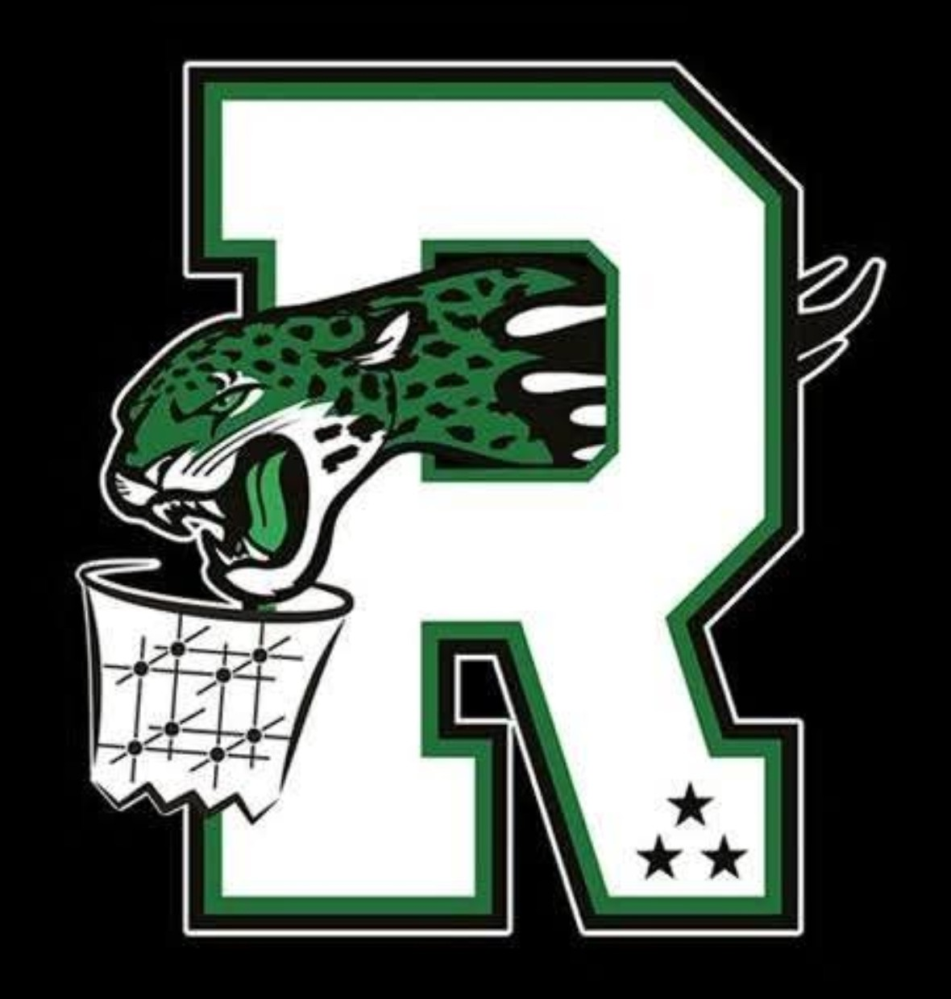

U18 féminines · saison 2026-2027
Elles l'ont fait : direction l'élite régionale
Pour la première fois, nos U18 féminines jouent en élite régionale. Le parcours de la qualification, les matchs à venir et les résumés : suivez leur saison ici.
Saison présentée par Le Binôme Numérique, partenaire du club

Le parcours
De la qualification aux play-offs
- Match 1Qualification en régions
contre Aplemont Le Havre Basket30 - 32 - Match 2Qualification en régions
contre Cléon Basketball Academy38 - 22 - Play-offU18 élite
contre Alençon-Damigny Basket 61Qualifiées - ÉliteCalendrier de l'élite régionale
repris de la fédération dès sa publicationà venir
Pour le clubLes scores et le classement sont repris des résultats officiels de la fédération, saisis par la feuille de marque électronique. Personne au club n'a à les ressaisir, et c'est valable pour toutes les équipes.
Sur les réseaux du club
La publication du soir
Basket Club RouxmesnilLe soir du match
U18 féminines · qualification en régions
38 - 22
Victoire contre Cléon
Saison présentée par Le Binôme Numérique
Belle réaction de nos U18F après la défaite de deux points au premier match. Merci aux familles venues les encourager !
Pour le clubVos affiches de résultats sont déjà très réussies : on garde votre style. Le visuel peut être préparé à partir du score officiel, puis relu par un dirigeant avant d'être publié. Les photos de joueuses ne sont publiées qu'avec l'autorisation écrite des parents.
Photo d'équipe de début de saison, fournie par le club avec l'accord des familles
L'équipe
L'équipe et ses coachs
Ici, l'histoire de l'équipe : depuis quand le groupe joue ensemble, la saison de la qualification, les coachs qui les encadrent. Ce texte sera écrit avec le club et les coachs.
Les prénoms et numéros des joueuses peuvent apparaître si les familles l'acceptent.